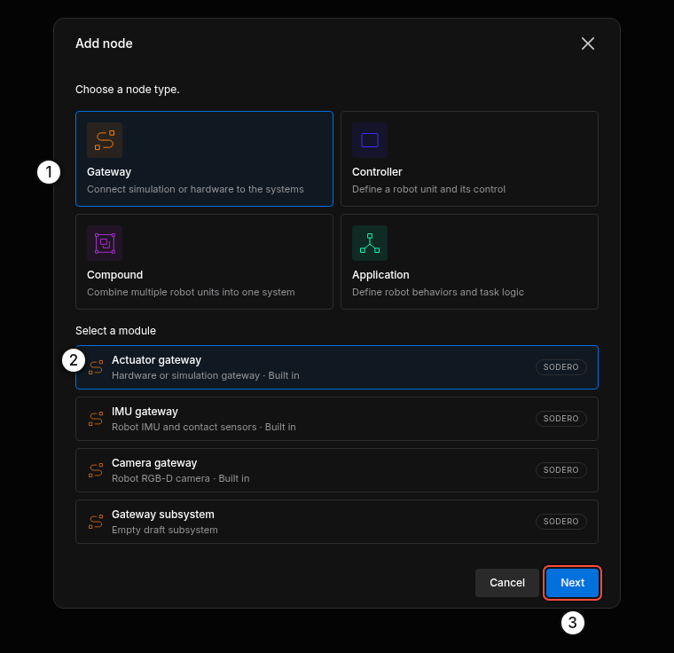
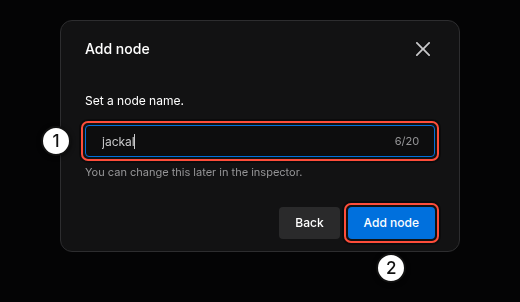
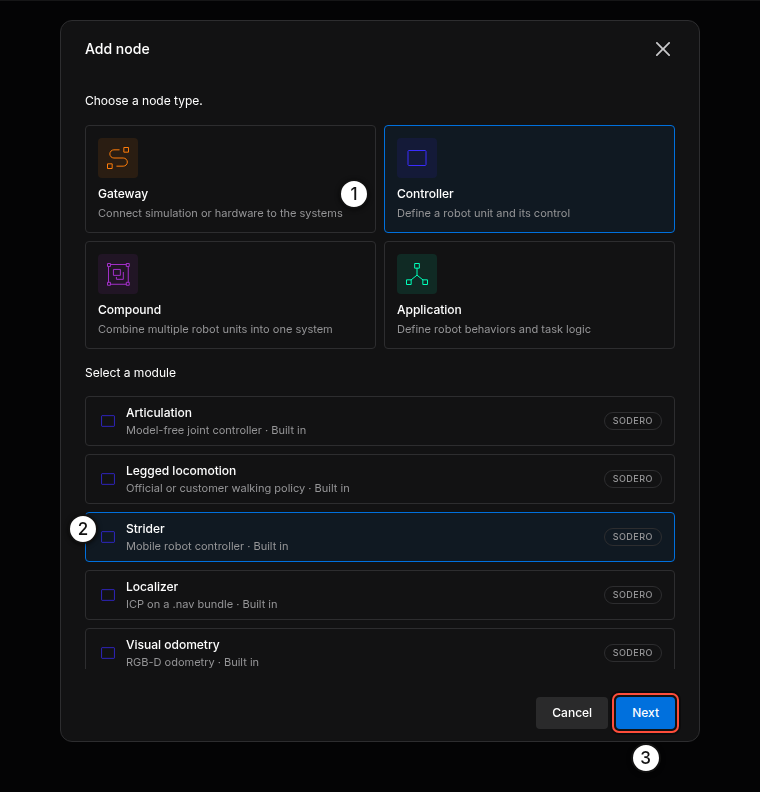
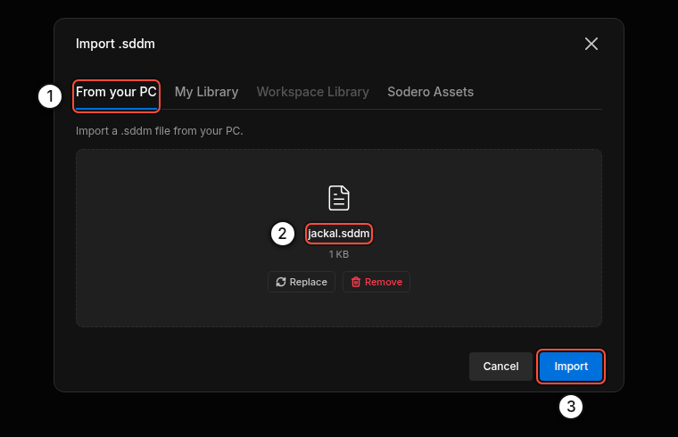
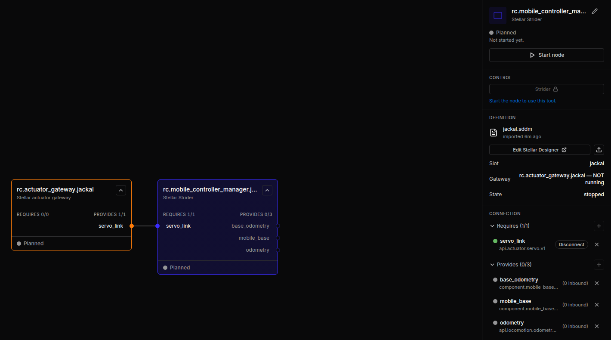
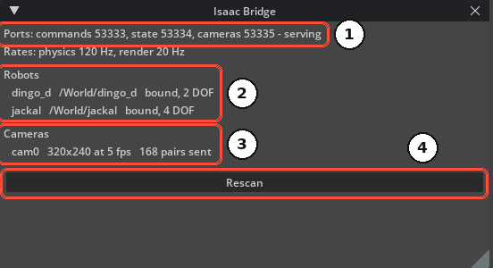
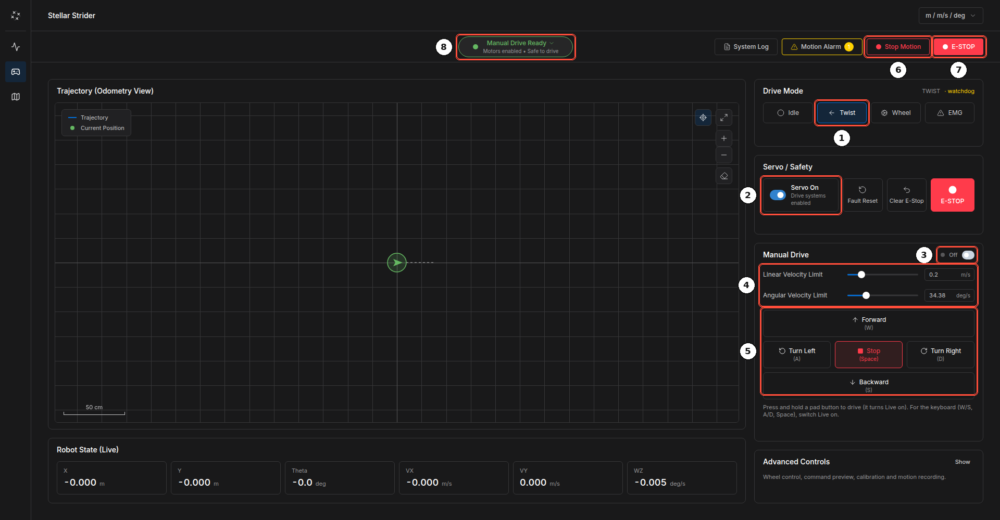

Quick Start¶
In about 15 minutes you will build a small robot system on Stellar X and drive a simulated Clearpath Jackal in NVIDIA Isaac Sim with Strider. You will:
- add an actuator gateway and a Strider controller on Stellar Station,
- load their design documents,
- connect Isaac Sim, and
- jog the robot from the browser.
flowchart TB
B["Your browser<br>Stellar Station · Strider"]
subgraph SX ["Stellar X"]
S["Strider<br>sodero.mlc.jackal"] -- servo_link --> G["Actuator gateway<br>rc.actuator_gateway.jackal"]
end
I["Isaac Sim + Isaac Bridge<br>robot /World/jackal"]
B --> S
G -- "LAN · TCP 53333–53335" --> IBefore You Start¶
| You need | Details |
|---|---|
| Stellar X | Powered on and reachable from your PC (Network Settings). In this guide its address is 192.168.60.18. |
| A PC with NVIDIA Isaac Sim | Isaac Sim 6.0 or later with the Isaac Bridge extension enabled (Isaac Bridge Installation), on the same network as Stellar X. In this guide its address is 192.168.60.20. |
| Example files | jackal.gw (gateway), jackal.sddm (Strider) and jackal_warehouse.zip (Isaac Sim scene, 6 MB). Download all three and extract the scene. |
Step 1: Add the Gateway¶
- Open
http://192.168.60.18in your browser. -
Click Add node, choose Gateway ①, then Actuator gateway ② and click Next ③.

Gateway › Actuator gateway -
Name it
jackal① and click Add node ②.


Step 2: Load the Gateway Document¶
- Select the new node
rc.actuator_gateway.jackal. In its inspector, click the upload icon in DEFINITION (Import .gw). -
On From your PC ①, choose
jackal.gw② and click Import ③. -
In TARGET, click Change and set the two values:
- Robot name:
jackal. It must equal the robot's prim name in Isaac Sim (/World/jackal). - Sim host: the IP address of your Isaac Sim PC.
Click Done.

- Robot name:

If the robot name differs from the prim name in Isaac Sim, the gateway waits forever and the robot never moves.
Step 3: Add Strider and Connect It¶
-
Click Add node, choose Controller ① › Strider ② and click Next ③. Name it
jackaland click Add node.
-
Select
sodero.mlc.jackaland click the upload icon in DEFINITION (Import .sddm). On From your PC ①, choosejackal.sddm② and click Import ③.
-
Connect the two nodes: drag from the Strider's
servo_link(left edge) to the gateway'sservo_link(right edge), or click Auto-connect next toservo_linkin the Strider's inspector.



Step 4: Play the Scene in Isaac Sim¶
- Open
jackal_warehouse.usdin Isaac Sim (File › Open). The scene contains a Clearpath Jackal at/World/jackaland a Clearpath Dingo at/World/dingo_din a warehouse. - Press Play.
- Open Window › Isaac Bridge. It shows the ports as serving and
jackal … bound, 4 DOF.


The Isaac Sim PC must accept TCP connections from Stellar X on ports 53333–53335. Allow them in its firewall (Isaac Bridge Installation).
Tip: To use your own robot instead, prepare its scene as described in Robot Setup: its articulation prim name is its robot name, and its joints, in order, are the gateway's actuators.
Step 5: Start the Nodes¶
- Select the gateway and click Start node. Wait until its state is Operating.
- Select the Strider and click Start node.
In the gateway's LOGS (stream Gateway events) you see the connection to Isaac Sim:
Gateway rc.actuator_gateway.jackal starting: simulation, 4 actuator(s), 1.0 ms cycle.
Simulation: robot 'jackal', simulator at 192.168.60.20; waiting for it to start.
Simulator connected.
Step 6: Jog the Robot with Strider¶
- In the Strider node's inspector, click Strider in CONTROL. Strider opens in a new tab.
- Open the Drive page (gamepad icon in the left rail).
- Under Drive Mode, click Twist ①.
- Under Servo / Safety, switch Servo On ②.
- Press and hold Forward (W) on the pad ⑤. The robot drives while you hold the button and stops when you release it. Turn Left (A), Turn Right (D) and Backward (S) work the same way.


Tip: Switch on Live ③ in Manual Drive to drive with the keyboard: W/S forward and back, A/D turn, Space stops.

When you are done, switch the servo off and click Idle under Drive Mode.
What's Next¶
| Next step | Page |
|---|---|
| Let the Jackal localize itself on a map and drive to goals | Navigate in Simulation |
| Learn every part of the Station page | Stellar Station |
| Build your own robot documents | Stellar Designer, Gateway Designer |
| Move from simulation to real motors | EtherCAT Mobile Base, EtherCAT Gateway |
| Let an AI coding agent do it for you | AI Coding Agents |